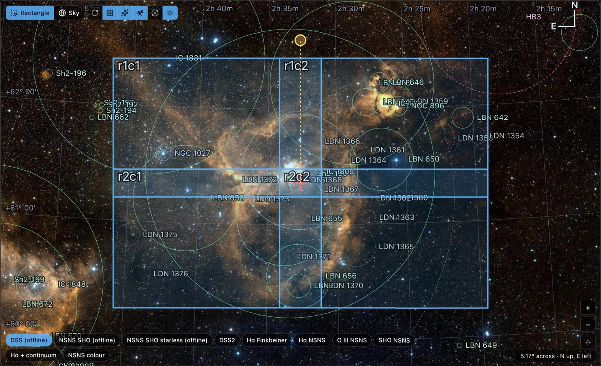
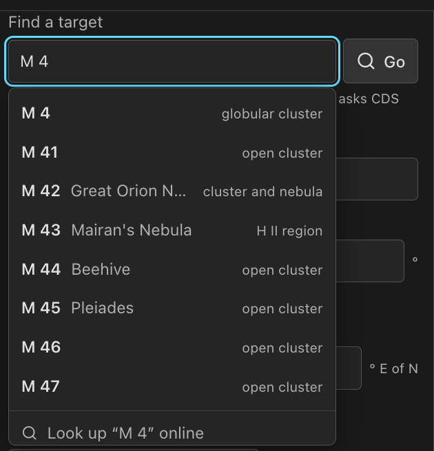
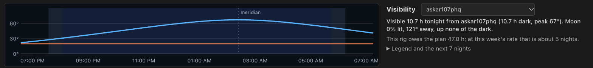
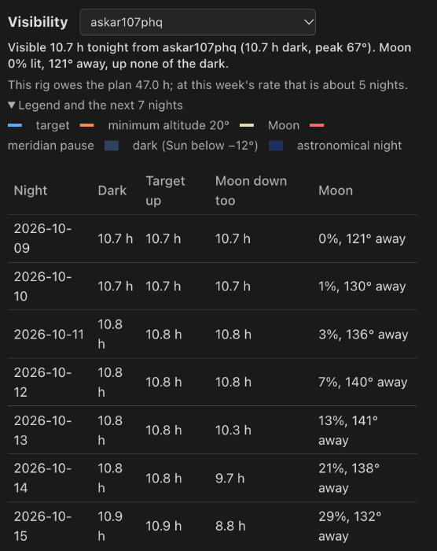

Framing
Place the target and each rig's field on a survey image, the way N.I.N.A.'s framing assistant does. Lay out mosaics, check tonight's visibility from every rig, and see finished panels on the sky.

Move and turn the field
Open a plan's workspace; it opens on Framing. The rectangle is the field of the rig that sets the panel size. It appears at once, centered on the target's catalog coordinates and rotation.
- Drag the rectangle to move the target. Drag its handle to turn it.
- Type a camera angle, use the quarter-turn buttons, or take the rig's fixed camera angle in one click.
- Scroll, or use the corner buttons, to zoom from three arcminutes out to a hemisphere. A trackpad zooms as far as a wheel for the same distance.
- A compass and a readout show orientation, center, angle and extent. Coordinates show five decimals of a degree and angles two; the draft keeps every digit.
Drags work both of N.I.N.A.'s ways. The buttons at the top of the stage pick one:
| Mode | Drag the rectangle | Drag the sky |
|---|---|---|
| Rectangle (default) | Moves the target. | Looks around; the target stays. |
| Sky | — | Turns the sky and the target under a fixed rectangle. Shift-drag looks around. |
Turn the sky with the camera keeps the rectangle upright and turns the sky by the camera angle, as N.I.N.A.'s "rotate sky" does. The stage is a stereographic globe about the view center, so a drag turns the sky under the pointer. The browser remembers these choices.
Move target to view center and Center view on target keep looking and planning apart: panning never moves the plan.
Find a target
Find a target offers names as you type. The server's Seiza object catalog answers first, with no network: designations, common names and aliases, one row per object with its kind. The last row looks the name up online at CDS Sesame (Simbad, NED, VizieR). Enter takes the highlighted row, else an exact local match, else goes online.
A pick moves the target and the view without saving. Undo puts the previous target back; Back to saved framing drops every change since the last save. The server keeps Sesame answers, hits for 90 days and misses for a day, so a name goes online once.

Survey layers
Chips on the sky switch the picture: the DSS2 color plates N.I.N.A. starts from, and the narrowband surveys (Finkbeiner H-alpha and the Northern Sky Narrowband Survey's H-alpha, O III, SHO and color layers). The Survey list under View holds every layer: DSS2 red, blue and near infrared, SDSS, DESI Legacy, SkyMapper, 2MASS, CTA-FRAM and the Mellinger panorama.
The layer is how the sky is shown, not part of the framing. Picking one is never an unsaved change, and the browser keeps it for every plan. The server fetches survey tiles from CDS HiPS2FITS and caches them, so a view you have seen works offline. Survey imagery is a composition aid, not pointing evidence.
Offline sky maps
N.I.N.A. publishes its framing assistant's whole-sky caches. Install one into the server's cache and the framing view renders any view from its tiles with no network:
psf-guard sky-maps install full --cache-dir /path/to/cache # DSS plates, 3.3 GB
psf-guard sky-maps install nsns-ohs --cache-dir /path/to/cache # NSNS SHO with stars, 1.4 GB
psf-guard sky-maps install nsns-ohs-starless --cache-dir /path/to/cache # NSNS SHO starless, 0.5 GB
psf-guard sky-maps list --cache-dir /path/to/cacheA folder copied from a rig's own %LOCALAPPDATA%\NINA\FramingAssistantCache
works too: drop it under <cache>/director/sky-maps/. A running
server offers a new folder within half a minute.
An offline map is preferred wherever it can stand in for an online survey: the DSS set for DSS2 color, the SHO set for the online NSNS SHO layer. A new framing starts on the offline DSS map. The online layer stays a click away. The NSNS sets are CC BY-NC-SA; the attribution line under the view says so.
Marks
Buttons at the top of the stage switch the layers drawn over the picture:
- Grid: an equatorial grid whose spacing follows the zoom, declination down the left edge and right ascension along the top.
- Constellations: figures and names once the view is wide enough.
- Deep-sky marks: objects from the Seiza object catalog at their catalog size and angle. On by default.
- Comets and asteroids: from Seiza's minor-body catalog, placed for the moment you look.
- Sun, Moon and planets: from a built-in ephemeris good to a few arcminutes.
Catalogs marked under View picks which catalog families get marks. Messier, NGC, IC, Sharpless, LDN and LBN start on; Barnard, vdB, SNR, UGC, WR, PGC and HD wait for a chip. A layer whose catalog is not on the server says so on the stage. A mark is a catalog place, not pointing evidence.
Rigs and panel size
The sidebar has one card per rig, this plan's rigs first. Each card shows a swatch in the color of the rig's outline on the sky, its field and pixel scale, and its part in the framing.
- The On switch adds a rig to the plan. Rigs are grouped On and Off; several can be on.
- Turning a rig on, or clicking an on rig's heading, frames the plan with it: its field sets the panel size and its card is highlighted.
- Shared framing names the rig the size comes from. Type a size sets one by hand. Use current field appears when that rig's optics changed since.
- Outline draws a rig's field on the sky, labeled with its name.
Rigs take their optics from their own frames when PSF Guard adopts them. Correct them in rig setup.
Lay out a mosaic
Set rows, columns and overlap under Shared framing. Every panel is drawn and named. On the Exposures tab, each rig can take every panel or only some, so a wide rig takes the whole field while a long-focus rig takes one corner. A coverage note names any panel no rig shoots.
Growing the grid or turning the mosaic never moves frames to other sky. A panel that moves by more than a quarter of its size and already has frames gets a new target at activation; the old target keeps its frames.
Frame a rig on its own
Frame separately gives a rig its own grid, camera angle and panel size, drawn in its own color beside the shared framing and edited in its card. It follows the shared center until you drag it, type a center, or move it to the view center. Shared center puts it back in step; Use shared drops it.
The separate framing of a rig that is off is drawn dim and stays put. One whose rig is gone is listed with Remove. When every rig that is on frames separately, nobody shoots the shared framing, so its rectangle is hidden and activation plans no target for it.
Visibility tonight
Under the sky, a strip times the target from each rig with a site. Tonight runs from local noon to the next noon. The verdict gives dark hours (Sun below −12°), hours inside the limits Target Scheduler applies, peak altitude, and the Moon's phase, separation and hours up.
- The chart draws the night from an hour before dusk to an hour after dawn: the target's track, the horizon at the target's azimuth, the Moon dashed, and bands for darkness and astronomical night.
- A marker shows the meridian transit. The rig's meridian pause is a broken red stretch and comes out of the visible hours.
- The limits are the higher minimum altitude of rig and plan, the lower maximum, the rig's custom horizon plus the plan's offset, the plan's meridian window, and the rig's meridian pause.
- A rig framed on its own is timed at its own center, and follows it as you drag.
- A folded table gives the coming week. A rig in the plan also gets the hours it still owes and the nights that takes at this week's rate.
Pick another rig from the list to compare sites. Times come from planning-grade Sun and Moon positions; they help choose targets and nights.


Finished panels on the sky
Once a plan is activated, the framing view draws each activated panel's latest stack where its plate solve puts it, beside the planned rectangles. A list gives every panel with its rig, frames accepted against desired, and why a stack is missing: none built yet, or built but not solved. Panels from different rigs sit side by side and are never blended. Show finished stacks on the sky hides them.
Save the framing
Save framing keeps the draft on the plan; the page's save bar does the same with the rest of your edits. A value the server would refuse is marked at its field with the reason: a panel side outside 0.01° to 30°, or a mosaic wider than 30°. A draft saved elsewhere since you loaded is refused until you reload.
Only a change to what activation writes (target, angle, grid, panels) asks for another activation. Survey and view choices never do.